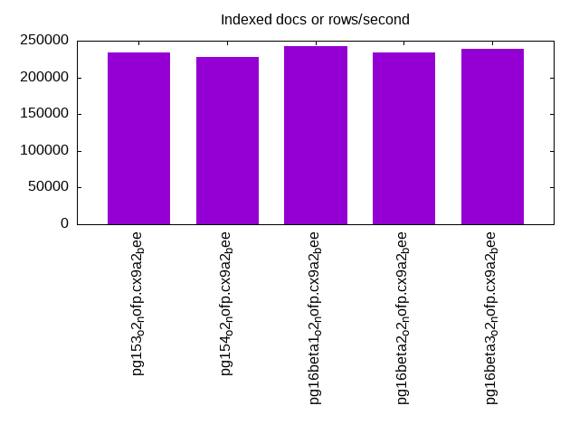
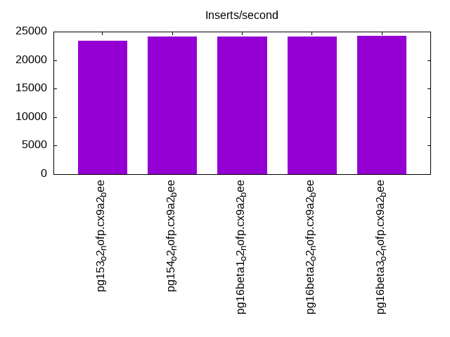
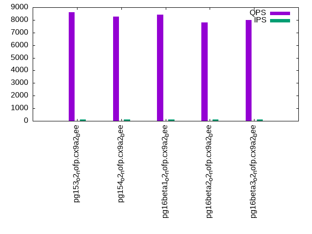
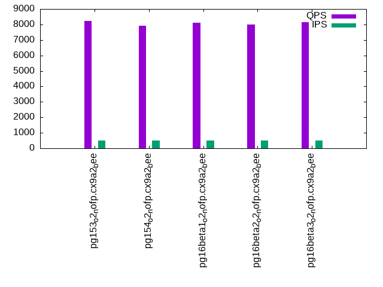
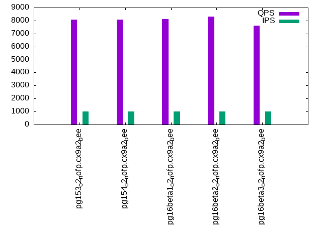

Introduction
This is a report for the insert benchmark with 20M docs and 1 client(s). It is generated by scripts (bash, awk, sed) and Tufte might not be impressed. An overview of the insert benchmark is here and a short update is here. Below, by DBMS, I mean DBMS+version.config. An example is my8020.c10b40 where my means MySQL, 8020 is version 8.0.20 and c10b40 is the name for the configuration file.
The test server has 8 AMD cores, 16G RAM and an NVMe SSD. It is described here as the Beelink. The benchmark was run with 1 client and there were 1 or 3 connections per client (1 for queries or inserts without rate limits, 1+1 for rate limited inserts+deletes). It uses 1 table. It loads 20M rows per table without secondary indexes, creates secondary indexes, then inserts 200M rows per table with a delete per insert to avoid growing the table. It then does 3 read+write tests for 7200s each that do queries as fast as possible with 100, 500 and then 1000 inserts/second/client concurrent with the queries and 1000 deletes/second to avoid growing the table. The database is cached by Postgres. Clients and the DBMS share one server. The per-database configs are in the per-database subdirectories here.
The tested DBMS are:
- pg153_o2_nofp.cx9a2_bee - Postgres 15.3, o2_nofp build that used -O2 -no-omit-frame-pointer, a2 config
- pg154_o2_nofp.cx9a2_bee - Postgres 15.4, o2_nofp build that used -O2 -no-omit-frame-pointer, a2 config
- pg16beta1_o2_nofp.cx9a2_bee - Postgres 16 beta1, o2_nofp build that used -O2 -no-omit-frame-pointer, a2 config
- pg16beta2_o2_nofp.cx9a2_bee - Postgres 16 beta2, o2_nofp build that used -O2 -no-omit-frame-pointer, a2 config
- pg16beta3_o2_nofp.cx9a2_bee - Postgres 16 beta3, o2_nofp build that used -O2 -no-omit-frame-pointer, a2 config
Contents
- Summary
- l.i0: load without secondary indexes
- l.x: create secondary indexes
- l.i1: continue load after secondary indexes created
- q100.1: range queries with 100 insert/s per client
- q500.1: range queries with 500 insert/s per client
- q1000.1: range queries with 1000 insert/s per client
Summary
The numbers are inserts/s for l.i0 and l.i1, indexed docs (or rows) /s for l.x and queries/s for q*.2. The values are the average rate over the entire test for inserts (IPS) and queries (QPS). The range of values for IPS and QPS is split into 3 parts: bottom 25%, middle 50%, top 25%. Values in the bottom 25% have a red background, values in the top 25% have a green background and values in the middle have no color. A gray background is used for values that can be ignored because the DBMS did not sustain the target insert rate. Red backgrounds are not used when the minimum value is within 80% of the max value.
| dbms | l.i0 | l.x | l.i1 | q100.1 | q500.1 | q1000.1 |
|---|---|---|---|---|---|---|
| pg153_o2_nofp.cx9a2_bee | 70922 | 233721 | 23422 | 8605 | 8223 | 8056 |
| pg154_o2_nofp.cx9a2_bee | 72464 | 228409 | 24137 | 8278 | 7911 | 8059 |
| pg16beta1_o2_nofp.cx9a2_bee | 71174 | 242169 | 24085 | 8403 | 8113 | 8093 |
| pg16beta2_o2_nofp.cx9a2_bee | 71174 | 233721 | 24122 | 7810 | 7977 | 8312 |
| pg16beta3_o2_nofp.cx9a2_bee | 71942 | 239286 | 24236 | 7978 | 8162 | 7621 |
This table has relative throughput, throughput for the DBMS relative to the DBMS in the first line, using the absolute throughput from the previous table. Values less than 0.95 have a yellow background. Values greater than 1.05 have a blue background.
| dbms | l.i0 | l.x | l.i1 | q100.1 | q500.1 | q1000.1 |
|---|---|---|---|---|---|---|
| pg153_o2_nofp.cx9a2_bee | 1.00 | 1.00 | 1.00 | 1.00 | 1.00 | 1.00 |
| pg154_o2_nofp.cx9a2_bee | 1.02 | 0.98 | 1.03 | 0.96 | 0.96 | 1.00 |
| pg16beta1_o2_nofp.cx9a2_bee | 1.00 | 1.04 | 1.03 | 0.98 | 0.99 | 1.00 |
| pg16beta2_o2_nofp.cx9a2_bee | 1.00 | 1.00 | 1.03 | 0.91 | 0.97 | 1.03 |
| pg16beta3_o2_nofp.cx9a2_bee | 1.01 | 1.02 | 1.03 | 0.93 | 0.99 | 0.95 |
This lists the average rate of inserts/s for the tests that do inserts concurrent with queries. For such tests the query rate is listed in the table above. The read+write tests are setup so that the insert rate should match the target rate every second. Cells that are not at least 95% of the target have a red background to indicate a failure to satisfy the target.
| dbms | q100.1 | q500.1 | q1000.1 |
|---|---|---|---|
| pg153_o2_nofp.cx9a2_bee | 100 | 499 | 998 |
| pg154_o2_nofp.cx9a2_bee | 100 | 499 | 998 |
| pg16beta1_o2_nofp.cx9a2_bee | 100 | 499 | 998 |
| pg16beta2_o2_nofp.cx9a2_bee | 100 | 499 | 998 |
| pg16beta3_o2_nofp.cx9a2_bee | 100 | 498 | 998 |
| target | 100 | 500 | 1000 |
l.i0
l.i0: load without secondary indexes. Graphs for performance per 1-second interval are here.
Average throughput:

Insert response time histogram: each cell has the percentage of responses that take <= the time in the header and max is the max response time in seconds. For the max column values in the top 25% of the range have a red background and in the bottom 25% of the range have a green background. The red background is not used when the min value is within 80% of the max value.
| dbms | 256us | 1ms | 4ms | 16ms | 64ms | 256ms | 1s | 4s | 16s | gt | max |
|---|---|---|---|---|---|---|---|---|---|---|---|
| pg153_o2_nofp.cx9a2_bee | 99.999 | 0.001 | 0.004 | ||||||||
| pg154_o2_nofp.cx9a2_bee | 100.000 | 0.003 | |||||||||
| pg16beta1_o2_nofp.cx9a2_bee | 100.000 | 0.003 | |||||||||
| pg16beta2_o2_nofp.cx9a2_bee | 100.000 | 0.003 | |||||||||
| pg16beta3_o2_nofp.cx9a2_bee | 99.999 | 0.001 | 0.005 |
Performance metrics for the DBMS listed above. Some are normalized by throughput, others are not. Legend for results is here.
ips qps rps rmbps wps wmbps rpq rkbpq wpi wkbpi csps cpups cspq cpupq dbgb1 dbgb2 rss maxop p50 p99 tag 70922 0 0 0.0 83.5 30.1 0.000 0.000 0.001 0.434 8753 22.3 0.123 25 1.9 5.2 0.2 0.004 71322 68116 20m.pg153_o2_nofp.cx9a2_bee 72464 0 0 0.0 85.0 30.7 0.000 0.000 0.001 0.433 8945 22.4 0.123 25 1.9 5.2 1.9 0.003 73019 64131 20m.pg154_o2_nofp.cx9a2_bee 71174 0 0 0.0 83.5 30.2 0.000 0.000 0.001 0.435 8767 22.4 0.123 25 1.9 5.2 1.9 0.003 71421 69887 20m.pg16beta1_o2_nofp.cx9a2_bee 71174 0 0 0.0 84.5 30.6 0.000 0.000 0.001 0.440 8792 22.5 0.124 25 1.9 5.2 0.2 0.003 71622 69222 20m.pg16beta2_o2_nofp.cx9a2_bee 71942 0 0 0.0 84.2 30.3 0.000 0.000 0.001 0.432 8851 22.4 0.123 25 1.9 5.2 1.5 0.005 72038 70219 20m.pg16beta3_o2_nofp.cx9a2_bee
l.x
l.x: create secondary indexes.
Average throughput:
Performance metrics for the DBMS listed above. Some are normalized by throughput, others are not. Legend for results is here.
ips qps rps rmbps wps wmbps rpq rkbpq wpi wkbpi csps cpups cspq cpupq dbgb1 dbgb2 rss maxop p50 p99 tag 233721 0 0 0.0 115.2 54.0 0.000 0.000 0.000 0.236 669 11.8 0.003 4 3.7 8.6 2.1 0.003 NA NA 20m.pg153_o2_nofp.cx9a2_bee 228409 0 0 0.0 103.2 48.2 0.000 0.000 0.000 0.216 709 11.7 0.003 4 3.7 8.6 2.1 0.003 NA NA 20m.pg154_o2_nofp.cx9a2_bee 242169 0 0 0.0 100.4 46.6 0.000 0.000 0.000 0.197 848 12.0 0.004 4 3.7 8.6 2.1 0.003 NA NA 20m.pg16beta1_o2_nofp.cx9a2_bee 233721 0 0 0.0 112.1 52.1 0.000 0.000 0.000 0.228 782 12.1 0.003 4 3.7 8.6 2.1 0.003 NA NA 20m.pg16beta2_o2_nofp.cx9a2_bee 239286 0 0 0.0 100.6 46.7 0.000 0.000 0.000 0.200 687 12.2 0.003 4 3.7 8.6 2.1 0.003 NA NA 20m.pg16beta3_o2_nofp.cx9a2_bee
l.i1
l.i1: continue load after secondary indexes created. Graphs for performance per 1-second interval are here.
Average throughput:
Insert response time histogram: each cell has the percentage of responses that take <= the time in the header and max is the max response time in seconds. For the max column values in the top 25% of the range have a red background and in the bottom 25% of the range have a green background. The red background is not used when the min value is within 80% of the max value.
| dbms | 256us | 1ms | 4ms | 16ms | 64ms | 256ms | 1s | 4s | 16s | gt | max |
|---|---|---|---|---|---|---|---|---|---|---|---|
| pg153_o2_nofp.cx9a2_bee | 99.998 | 0.002 | nonzero | 0.026 | |||||||
| pg154_o2_nofp.cx9a2_bee | 99.999 | 0.001 | nonzero | 0.037 | |||||||
| pg16beta1_o2_nofp.cx9a2_bee | 99.999 | nonzero | nonzero | 0.020 | |||||||
| pg16beta2_o2_nofp.cx9a2_bee | 99.999 | 0.001 | nonzero | 0.022 | |||||||
| pg16beta3_o2_nofp.cx9a2_bee | 99.999 | nonzero | nonzero | 0.021 |
Delete response time histogram: each cell has the percentage of responses that take <= the time in the header and max is the max response time in seconds. For the max column values in the top 25% of the range have a red background and in the bottom 25% of the range have a green background. The red background is not used when the min value is within 80% of the max value.
| dbms | 256us | 1ms | 4ms | 16ms | 64ms | 256ms | 1s | 4s | 16s | gt | max |
|---|---|---|---|---|---|---|---|---|---|---|---|
| pg153_o2_nofp.cx9a2_bee | 0.100 | 84.138 | 7.583 | 8.179 | nonzero | 0.024 | |||||
| pg154_o2_nofp.cx9a2_bee | 0.105 | 84.026 | 9.104 | 6.765 | nonzero | 0.031 | |||||
| pg16beta1_o2_nofp.cx9a2_bee | 0.101 | 83.862 | 8.568 | 7.470 | nonzero | 0.018 | |||||
| pg16beta2_o2_nofp.cx9a2_bee | 0.097 | 83.915 | 9.132 | 6.856 | nonzero | 0.020 | |||||
| pg16beta3_o2_nofp.cx9a2_bee | 0.101 | 84.147 | 8.608 | 7.145 | nonzero | 0.019 |
Performance metrics for the DBMS listed above. Some are normalized by throughput, others are not. Legend for results is here.
ips qps rps rmbps wps wmbps rpq rkbpq wpi wkbpi csps cpups cspq cpupq dbgb1 dbgb2 rss maxop p50 p99 tag 23422 0 0 0.0 71.4 20.2 0.000 0.000 0.003 0.882 11209 23.4 0.479 80 5.1 45.1 4.7 0.026 29068 7042 20m.pg153_o2_nofp.cx9a2_bee 24137 0 0 0.0 73.0 20.7 0.000 0.000 0.003 0.880 11585 23.7 0.480 79 5.1 45.1 4.8 0.037 29132 9889 20m.pg154_o2_nofp.cx9a2_bee 24085 0 0 0.0 72.9 20.7 0.000 0.000 0.003 0.880 11575 23.7 0.481 79 5.1 45.1 4.8 0.020 29262 9789 20m.pg16beta1_o2_nofp.cx9a2_bee 24122 0 0 0.0 73.2 20.8 0.000 0.000 0.003 0.881 11585 23.7 0.480 79 5.1 45.1 5.1 0.022 29118 9989 20m.pg16beta2_o2_nofp.cx9a2_bee 24236 0 0 0.0 73.5 20.8 0.000 0.000 0.003 0.879 11639 23.8 0.480 79 5.1 45.1 4.8 0.021 29329 9939 20m.pg16beta3_o2_nofp.cx9a2_bee
q100.1
q100.1: range queries with 100 insert/s per client. Graphs for performance per 1-second interval are here.
Average throughput:
Query response time histogram: each cell has the percentage of responses that take <= the time in the header and max is the max response time in seconds. For max values in the top 25% of the range have a red background and in the bottom 25% of the range have a green background. The red background is not used when the min value is within 80% of the max value.
| dbms | 256us | 1ms | 4ms | 16ms | 64ms | 256ms | 1s | 4s | 16s | gt | max |
|---|---|---|---|---|---|---|---|---|---|---|---|
| pg153_o2_nofp.cx9a2_bee | 99.956 | 0.044 | nonzero | 0.003 | |||||||
| pg154_o2_nofp.cx9a2_bee | 99.928 | 0.072 | nonzero | 0.003 | |||||||
| pg16beta1_o2_nofp.cx9a2_bee | 99.936 | 0.063 | nonzero | 0.003 | |||||||
| pg16beta2_o2_nofp.cx9a2_bee | 99.913 | 0.087 | nonzero | nonzero | 0.004 | ||||||
| pg16beta3_o2_nofp.cx9a2_bee | 99.923 | 0.077 | nonzero | 0.003 |
Insert response time histogram: each cell has the percentage of responses that take <= the time in the header and max is the max response time in seconds. For max values in the top 25% of the range have a red background and in the bottom 25% of the range have a green background. The red background is not used when the min value is within 80% of the max value.
| dbms | 256us | 1ms | 4ms | 16ms | 64ms | 256ms | 1s | 4s | 16s | gt | max |
|---|---|---|---|---|---|---|---|---|---|---|---|
| pg153_o2_nofp.cx9a2_bee | 99.958 | 0.042 | 0.007 | ||||||||
| pg154_o2_nofp.cx9a2_bee | 99.944 | 0.056 | 0.006 | ||||||||
| pg16beta1_o2_nofp.cx9a2_bee | 99.847 | 0.153 | 0.006 | ||||||||
| pg16beta2_o2_nofp.cx9a2_bee | 99.819 | 0.181 | 0.006 | ||||||||
| pg16beta3_o2_nofp.cx9a2_bee | 99.958 | 0.042 | 0.006 |
Delete response time histogram: each cell has the percentage of responses that take <= the time in the header and max is the max response time in seconds. For max values in the top 25% of the range have a red background and in the bottom 25% of the range have a green background. The red background is not used when the min value is within 80% of the max value.
| dbms | 256us | 1ms | 4ms | 16ms | 64ms | 256ms | 1s | 4s | 16s | gt | max |
|---|---|---|---|---|---|---|---|---|---|---|---|
| pg153_o2_nofp.cx9a2_bee | 0.042 | 99.944 | 0.014 | 0.002 | |||||||
| pg154_o2_nofp.cx9a2_bee | 0.167 | 99.819 | 0.014 | 0.002 | |||||||
| pg16beta1_o2_nofp.cx9a2_bee | 0.236 | 40.667 | 57.486 | 1.611 | 0.007 | ||||||
| pg16beta2_o2_nofp.cx9a2_bee | 0.444 | 49.486 | 41.403 | 8.667 | 0.007 | ||||||
| pg16beta3_o2_nofp.cx9a2_bee | 0.944 | 99.014 | 0.042 | 0.003 |
Performance metrics for the DBMS listed above. Some are normalized by throughput, others are not. Legend for results is here.
ips qps rps rmbps wps wmbps rpq rkbpq wpi wkbpi csps cpups cspq cpupq dbgb1 dbgb2 rss maxop p50 p99 tag 100 8605 0 0.0 47.6 2.3 0.000 0.000 0.478 23.249 33126 12.6 3.849 117 5.1 45.1 3.3 0.003 8201 7542 20m.pg153_o2_nofp.cx9a2_bee 100 8278 0 0.0 46.1 2.2 0.000 0.000 0.463 22.592 31908 12.5 3.854 121 5.1 45.1 3.3 0.003 7686 7418 20m.pg154_o2_nofp.cx9a2_bee 100 8403 0 0.0 45.8 2.2 0.000 0.000 0.459 22.739 32357 12.6 3.851 120 5.1 45.1 3.3 0.003 7795 7581 20m.pg16beta1_o2_nofp.cx9a2_bee 100 7810 0 0.0 46.0 2.2 0.000 0.000 0.461 22.685 30104 12.7 3.854 130 5.1 45.1 1.3 0.004 7592 7463 20m.pg16beta2_o2_nofp.cx9a2_bee 100 7978 0 0.0 46.0 2.2 0.000 0.000 0.462 22.514 30764 12.7 3.856 127 5.1 45.1 3.3 0.003 7522 7368 20m.pg16beta3_o2_nofp.cx9a2_bee
q500.1
q500.1: range queries with 500 insert/s per client. Graphs for performance per 1-second interval are here.
Average throughput:
Query response time histogram: each cell has the percentage of responses that take <= the time in the header and max is the max response time in seconds. For max values in the top 25% of the range have a red background and in the bottom 25% of the range have a green background. The red background is not used when the min value is within 80% of the max value.
| dbms | 256us | 1ms | 4ms | 16ms | 64ms | 256ms | 1s | 4s | 16s | gt | max |
|---|---|---|---|---|---|---|---|---|---|---|---|
| pg153_o2_nofp.cx9a2_bee | 99.935 | 0.065 | nonzero | nonzero | 0.014 | ||||||
| pg154_o2_nofp.cx9a2_bee | 99.925 | 0.075 | nonzero | nonzero | 0.014 | ||||||
| pg16beta1_o2_nofp.cx9a2_bee | 99.935 | 0.065 | nonzero | nonzero | 0.007 | ||||||
| pg16beta2_o2_nofp.cx9a2_bee | 99.934 | 0.066 | nonzero | 0.003 | |||||||
| pg16beta3_o2_nofp.cx9a2_bee | 99.932 | 0.068 | nonzero | nonzero | 0.014 |
Insert response time histogram: each cell has the percentage of responses that take <= the time in the header and max is the max response time in seconds. For max values in the top 25% of the range have a red background and in the bottom 25% of the range have a green background. The red background is not used when the min value is within 80% of the max value.
| dbms | 256us | 1ms | 4ms | 16ms | 64ms | 256ms | 1s | 4s | 16s | gt | max |
|---|---|---|---|---|---|---|---|---|---|---|---|
| pg153_o2_nofp.cx9a2_bee | 99.958 | 0.028 | 0.014 | 0.035 | |||||||
| pg154_o2_nofp.cx9a2_bee | 99.958 | 0.031 | 0.011 | 0.028 | |||||||
| pg16beta1_o2_nofp.cx9a2_bee | 99.978 | 0.014 | 0.008 | 0.024 | |||||||
| pg16beta2_o2_nofp.cx9a2_bee | 99.983 | 0.014 | 0.003 | 0.020 | |||||||
| pg16beta3_o2_nofp.cx9a2_bee | 99.961 | 0.028 | 0.011 | 0.031 |
Delete response time histogram: each cell has the percentage of responses that take <= the time in the header and max is the max response time in seconds. For max values in the top 25% of the range have a red background and in the bottom 25% of the range have a green background. The red background is not used when the min value is within 80% of the max value.
| dbms | 256us | 1ms | 4ms | 16ms | 64ms | 256ms | 1s | 4s | 16s | gt | max |
|---|---|---|---|---|---|---|---|---|---|---|---|
| pg153_o2_nofp.cx9a2_bee | 5.150 | 73.550 | 0.106 | 21.189 | 0.006 | 0.024 | |||||
| pg154_o2_nofp.cx9a2_bee | 4.597 | 74.119 | 0.156 | 21.122 | 0.006 | 0.026 | |||||
| pg16beta1_o2_nofp.cx9a2_bee | 3.769 | 84.078 | 11.303 | 0.831 | 0.019 | 0.022 | |||||
| pg16beta2_o2_nofp.cx9a2_bee | 3.911 | 83.211 | 8.619 | 4.247 | 0.011 | 0.018 | |||||
| pg16beta3_o2_nofp.cx9a2_bee | 4.197 | 72.983 | 0.092 | 22.722 | 0.006 | 0.022 |
Performance metrics for the DBMS listed above. Some are normalized by throughput, others are not. Legend for results is here.
ips qps rps rmbps wps wmbps rpq rkbpq wpi wkbpi csps cpups cspq cpupq dbgb1 dbgb2 rss maxop p50 p99 tag 499 8223 0 0.0 37.1 3.0 0.000 0.000 0.074 6.214 31784 13.0 3.865 126 5.1 41.8 2.0 0.014 7703 7526 20m.pg153_o2_nofp.cx9a2_bee 499 7911 0 0.0 39.1 3.0 0.000 0.000 0.078 6.229 30575 13.0 3.865 131 5.1 41.7 5.1 0.014 7508 7324 20m.pg154_o2_nofp.cx9a2_bee 499 8113 0 0.0 38.9 3.0 0.000 0.000 0.078 6.204 31350 12.9 3.864 127 5.1 41.8 5.1 0.007 7701 7544 20m.pg16beta1_o2_nofp.cx9a2_bee 499 7977 0 0.0 39.0 3.0 0.000 0.000 0.078 6.081 30829 12.9 3.865 129 5.1 41.7 2.0 0.003 7591 7433 20m.pg16beta2_o2_nofp.cx9a2_bee 498 8162 0 0.0 39.2 3.0 0.000 0.000 0.079 6.256 31603 13.1 3.872 128 5.1 41.7 2.0 0.014 7606 7382 20m.pg16beta3_o2_nofp.cx9a2_bee
q1000.1
q1000.1: range queries with 1000 insert/s per client. Graphs for performance per 1-second interval are here.
Average throughput:
Query response time histogram: each cell has the percentage of responses that take <= the time in the header and max is the max response time in seconds. For max values in the top 25% of the range have a red background and in the bottom 25% of the range have a green background. The red background is not used when the min value is within 80% of the max value.
| dbms | 256us | 1ms | 4ms | 16ms | 64ms | 256ms | 1s | 4s | 16s | gt | max |
|---|---|---|---|---|---|---|---|---|---|---|---|
| pg153_o2_nofp.cx9a2_bee | 99.924 | 0.075 | nonzero | nonzero | nonzero | 0.019 | |||||
| pg154_o2_nofp.cx9a2_bee | 99.929 | 0.071 | nonzero | nonzero | 0.004 | ||||||
| pg16beta1_o2_nofp.cx9a2_bee | 99.931 | 0.069 | nonzero | 0.003 | |||||||
| pg16beta2_o2_nofp.cx9a2_bee | 99.941 | 0.059 | nonzero | nonzero | nonzero | 0.027 | |||||
| pg16beta3_o2_nofp.cx9a2_bee | 99.919 | 0.081 | nonzero | nonzero | 0.004 |
Insert response time histogram: each cell has the percentage of responses that take <= the time in the header and max is the max response time in seconds. For max values in the top 25% of the range have a red background and in the bottom 25% of the range have a green background. The red background is not used when the min value is within 80% of the max value.
| dbms | 256us | 1ms | 4ms | 16ms | 64ms | 256ms | 1s | 4s | 16s | gt | max |
|---|---|---|---|---|---|---|---|---|---|---|---|
| pg153_o2_nofp.cx9a2_bee | 99.982 | 0.015 | 0.003 | 0.024 | |||||||
| pg154_o2_nofp.cx9a2_bee | 99.992 | 0.008 | 0.008 | ||||||||
| pg16beta1_o2_nofp.cx9a2_bee | 99.990 | 0.010 | 0.005 | ||||||||
| pg16beta2_o2_nofp.cx9a2_bee | 99.987 | 0.007 | 0.006 | 0.033 | |||||||
| pg16beta3_o2_nofp.cx9a2_bee | 99.996 | 0.004 | 0.007 |
Delete response time histogram: each cell has the percentage of responses that take <= the time in the header and max is the max response time in seconds. For max values in the top 25% of the range have a red background and in the bottom 25% of the range have a green background. The red background is not used when the min value is within 80% of the max value.
| dbms | 256us | 1ms | 4ms | 16ms | 64ms | 256ms | 1s | 4s | 16s | gt | max |
|---|---|---|---|---|---|---|---|---|---|---|---|
| pg153_o2_nofp.cx9a2_bee | 2.960 | 73.797 | 0.099 | 23.142 | 0.003 | 0.022 | |||||
| pg154_o2_nofp.cx9a2_bee | 3.288 | 73.756 | 0.107 | 22.850 | 0.013 | ||||||
| pg16beta1_o2_nofp.cx9a2_bee | 2.896 | 82.332 | 7.536 | 7.233 | 0.003 | 0.020 | |||||
| pg16beta2_o2_nofp.cx9a2_bee | 2.572 | 81.536 | 6.431 | 9.456 | 0.006 | 0.026 | |||||
| pg16beta3_o2_nofp.cx9a2_bee | 2.311 | 75.607 | 0.103 | 21.979 | 0.012 |
Performance metrics for the DBMS listed above. Some are normalized by throughput, others are not. Legend for results is here.
ips qps rps rmbps wps wmbps rpq rkbpq wpi wkbpi csps cpups cspq cpupq dbgb1 dbgb2 rss maxop p50 p99 tag 998 8056 0 0.0 26.6 3.3 0.000 0.000 0.027 3.394 31375 13.9 3.895 138 5.1 37.0 5.1 0.019 7616 7448 20m.pg153_o2_nofp.cx9a2_bee 998 8059 0 0.0 27.5 3.3 0.000 0.000 0.028 3.361 31366 13.8 3.892 137 5.1 37.0 2.7 0.004 7543 7335 20m.pg154_o2_nofp.cx9a2_bee 998 8093 0 0.0 27.3 3.3 0.000 0.000 0.027 3.345 31489 13.9 3.891 137 5.1 37.0 5.1 0.003 7699 7534 20m.pg16beta1_o2_nofp.cx9a2_bee 998 8312 0 0.0 26.9 3.3 0.000 0.000 0.027 3.391 32320 13.7 3.888 132 5.1 37.0 3.1 0.027 7694 7485 20m.pg16beta2_o2_nofp.cx9a2_bee 998 7621 0 0.0 27.6 3.3 0.000 0.000 0.028 3.365 29699 14.0 3.897 147 5.1 37.0 2.7 0.004 7463 7318 20m.pg16beta3_o2_nofp.cx9a2_bee
l.i0
l.i0: load without secondary indexes
Performance metrics for all DBMS, not just the ones listed above. Some are normalized by throughput, others are not. Legend for results is here.
ips qps rps rmbps wps wmbps rpq rkbpq wpi wkbpi csps cpups cspq cpupq dbgb1 dbgb2 rss maxop p50 p99 tag 70922 0 0 0.0 83.5 30.1 0.000 0.000 0.001 0.434 8753 22.3 0.123 25 1.9 5.2 0.2 0.004 71322 68116 20m.pg153_o2_nofp.cx9a2_bee 72464 0 0 0.0 85.0 30.7 0.000 0.000 0.001 0.433 8945 22.4 0.123 25 1.9 5.2 1.9 0.003 73019 64131 20m.pg154_o2_nofp.cx9a2_bee 71174 0 0 0.0 83.5 30.2 0.000 0.000 0.001 0.435 8767 22.4 0.123 25 1.9 5.2 1.9 0.003 71421 69887 20m.pg16beta1_o2_nofp.cx9a2_bee 71174 0 0 0.0 84.5 30.6 0.000 0.000 0.001 0.440 8792 22.5 0.124 25 1.9 5.2 0.2 0.003 71622 69222 20m.pg16beta2_o2_nofp.cx9a2_bee 71942 0 0 0.0 84.2 30.3 0.000 0.000 0.001 0.432 8851 22.4 0.123 25 1.9 5.2 1.5 0.005 72038 70219 20m.pg16beta3_o2_nofp.cx9a2_bee
l.x
l.x: create secondary indexes
Performance metrics for all DBMS, not just the ones listed above. Some are normalized by throughput, others are not. Legend for results is here.
ips qps rps rmbps wps wmbps rpq rkbpq wpi wkbpi csps cpups cspq cpupq dbgb1 dbgb2 rss maxop p50 p99 tag 233721 0 0 0.0 115.2 54.0 0.000 0.000 0.000 0.236 669 11.8 0.003 4 3.7 8.6 2.1 0.003 NA NA 20m.pg153_o2_nofp.cx9a2_bee 228409 0 0 0.0 103.2 48.2 0.000 0.000 0.000 0.216 709 11.7 0.003 4 3.7 8.6 2.1 0.003 NA NA 20m.pg154_o2_nofp.cx9a2_bee 242169 0 0 0.0 100.4 46.6 0.000 0.000 0.000 0.197 848 12.0 0.004 4 3.7 8.6 2.1 0.003 NA NA 20m.pg16beta1_o2_nofp.cx9a2_bee 233721 0 0 0.0 112.1 52.1 0.000 0.000 0.000 0.228 782 12.1 0.003 4 3.7 8.6 2.1 0.003 NA NA 20m.pg16beta2_o2_nofp.cx9a2_bee 239286 0 0 0.0 100.6 46.7 0.000 0.000 0.000 0.200 687 12.2 0.003 4 3.7 8.6 2.1 0.003 NA NA 20m.pg16beta3_o2_nofp.cx9a2_bee
l.i1
l.i1: continue load after secondary indexes created
Performance metrics for all DBMS, not just the ones listed above. Some are normalized by throughput, others are not. Legend for results is here.
ips qps rps rmbps wps wmbps rpq rkbpq wpi wkbpi csps cpups cspq cpupq dbgb1 dbgb2 rss maxop p50 p99 tag 23422 0 0 0.0 71.4 20.2 0.000 0.000 0.003 0.882 11209 23.4 0.479 80 5.1 45.1 4.7 0.026 29068 7042 20m.pg153_o2_nofp.cx9a2_bee 24137 0 0 0.0 73.0 20.7 0.000 0.000 0.003 0.880 11585 23.7 0.480 79 5.1 45.1 4.8 0.037 29132 9889 20m.pg154_o2_nofp.cx9a2_bee 24085 0 0 0.0 72.9 20.7 0.000 0.000 0.003 0.880 11575 23.7 0.481 79 5.1 45.1 4.8 0.020 29262 9789 20m.pg16beta1_o2_nofp.cx9a2_bee 24122 0 0 0.0 73.2 20.8 0.000 0.000 0.003 0.881 11585 23.7 0.480 79 5.1 45.1 5.1 0.022 29118 9989 20m.pg16beta2_o2_nofp.cx9a2_bee 24236 0 0 0.0 73.5 20.8 0.000 0.000 0.003 0.879 11639 23.8 0.480 79 5.1 45.1 4.8 0.021 29329 9939 20m.pg16beta3_o2_nofp.cx9a2_bee
q100.1
q100.1: range queries with 100 insert/s per client
Performance metrics for all DBMS, not just the ones listed above. Some are normalized by throughput, others are not. Legend for results is here.
ips qps rps rmbps wps wmbps rpq rkbpq wpi wkbpi csps cpups cspq cpupq dbgb1 dbgb2 rss maxop p50 p99 tag 100 8605 0 0.0 47.6 2.3 0.000 0.000 0.478 23.249 33126 12.6 3.849 117 5.1 45.1 3.3 0.003 8201 7542 20m.pg153_o2_nofp.cx9a2_bee 100 8278 0 0.0 46.1 2.2 0.000 0.000 0.463 22.592 31908 12.5 3.854 121 5.1 45.1 3.3 0.003 7686 7418 20m.pg154_o2_nofp.cx9a2_bee 100 8403 0 0.0 45.8 2.2 0.000 0.000 0.459 22.739 32357 12.6 3.851 120 5.1 45.1 3.3 0.003 7795 7581 20m.pg16beta1_o2_nofp.cx9a2_bee 100 7810 0 0.0 46.0 2.2 0.000 0.000 0.461 22.685 30104 12.7 3.854 130 5.1 45.1 1.3 0.004 7592 7463 20m.pg16beta2_o2_nofp.cx9a2_bee 100 7978 0 0.0 46.0 2.2 0.000 0.000 0.462 22.514 30764 12.7 3.856 127 5.1 45.1 3.3 0.003 7522 7368 20m.pg16beta3_o2_nofp.cx9a2_bee
q500.1
q500.1: range queries with 500 insert/s per client
Performance metrics for all DBMS, not just the ones listed above. Some are normalized by throughput, others are not. Legend for results is here.
ips qps rps rmbps wps wmbps rpq rkbpq wpi wkbpi csps cpups cspq cpupq dbgb1 dbgb2 rss maxop p50 p99 tag 499 8223 0 0.0 37.1 3.0 0.000 0.000 0.074 6.214 31784 13.0 3.865 126 5.1 41.8 2.0 0.014 7703 7526 20m.pg153_o2_nofp.cx9a2_bee 499 7911 0 0.0 39.1 3.0 0.000 0.000 0.078 6.229 30575 13.0 3.865 131 5.1 41.7 5.1 0.014 7508 7324 20m.pg154_o2_nofp.cx9a2_bee 499 8113 0 0.0 38.9 3.0 0.000 0.000 0.078 6.204 31350 12.9 3.864 127 5.1 41.8 5.1 0.007 7701 7544 20m.pg16beta1_o2_nofp.cx9a2_bee 499 7977 0 0.0 39.0 3.0 0.000 0.000 0.078 6.081 30829 12.9 3.865 129 5.1 41.7 2.0 0.003 7591 7433 20m.pg16beta2_o2_nofp.cx9a2_bee 498 8162 0 0.0 39.2 3.0 0.000 0.000 0.079 6.256 31603 13.1 3.872 128 5.1 41.7 2.0 0.014 7606 7382 20m.pg16beta3_o2_nofp.cx9a2_bee
q1000.1
q1000.1: range queries with 1000 insert/s per client
Performance metrics for all DBMS, not just the ones listed above. Some are normalized by throughput, others are not. Legend for results is here.
ips qps rps rmbps wps wmbps rpq rkbpq wpi wkbpi csps cpups cspq cpupq dbgb1 dbgb2 rss maxop p50 p99 tag 998 8056 0 0.0 26.6 3.3 0.000 0.000 0.027 3.394 31375 13.9 3.895 138 5.1 37.0 5.1 0.019 7616 7448 20m.pg153_o2_nofp.cx9a2_bee 998 8059 0 0.0 27.5 3.3 0.000 0.000 0.028 3.361 31366 13.8 3.892 137 5.1 37.0 2.7 0.004 7543 7335 20m.pg154_o2_nofp.cx9a2_bee 998 8093 0 0.0 27.3 3.3 0.000 0.000 0.027 3.345 31489 13.9 3.891 137 5.1 37.0 5.1 0.003 7699 7534 20m.pg16beta1_o2_nofp.cx9a2_bee 998 8312 0 0.0 26.9 3.3 0.000 0.000 0.027 3.391 32320 13.7 3.888 132 5.1 37.0 3.1 0.027 7694 7485 20m.pg16beta2_o2_nofp.cx9a2_bee 998 7621 0 0.0 27.6 3.3 0.000 0.000 0.028 3.365 29699 14.0 3.897 147 5.1 37.0 2.7 0.004 7463 7318 20m.pg16beta3_o2_nofp.cx9a2_bee
l.i0
- l.i0: load without secondary indexes
- Legend for results is here.
- Each entry lists the percentage of responses that fit in that bucket (slower than max time for previous bucket, faster than min time for next bucket).
Insert response time histogram
256us 1ms 4ms 16ms 64ms 256ms 1s 4s 16s gt max tag 0.000 0.000 99.999 0.001 0.000 0.000 0.000 0.000 0.000 0.000 0.004 pg153_o2_nofp.cx9a2_bee 0.000 0.000 100.000 0.000 0.000 0.000 0.000 0.000 0.000 0.000 0.003 pg154_o2_nofp.cx9a2_bee 0.000 0.000 100.000 0.000 0.000 0.000 0.000 0.000 0.000 0.000 0.003 pg16beta1_o2_nofp.cx9a2_bee 0.000 0.000 100.000 0.000 0.000 0.000 0.000 0.000 0.000 0.000 0.003 pg16beta2_o2_nofp.cx9a2_bee 0.000 0.000 99.999 0.001 0.000 0.000 0.000 0.000 0.000 0.000 0.005 pg16beta3_o2_nofp.cx9a2_bee
l.x
- l.x: create secondary indexes
- Legend for results is here.
- Each entry lists the percentage of responses that fit in that bucket (slower than max time for previous bucket, faster than min time for next bucket).
TODO - determine whether there is data for create index response time
l.i1
- l.i1: continue load after secondary indexes created
- Legend for results is here.
- Each entry lists the percentage of responses that fit in that bucket (slower than max time for previous bucket, faster than min time for next bucket).
Insert response time histogram
256us 1ms 4ms 16ms 64ms 256ms 1s 4s 16s gt max tag 0.000 0.000 99.998 0.002 nonzero 0.000 0.000 0.000 0.000 0.000 0.026 pg153_o2_nofp.cx9a2_bee 0.000 0.000 99.999 0.001 nonzero 0.000 0.000 0.000 0.000 0.000 0.037 pg154_o2_nofp.cx9a2_bee 0.000 0.000 99.999 nonzero nonzero 0.000 0.000 0.000 0.000 0.000 0.020 pg16beta1_o2_nofp.cx9a2_bee 0.000 0.000 99.999 0.001 nonzero 0.000 0.000 0.000 0.000 0.000 0.022 pg16beta2_o2_nofp.cx9a2_bee 0.000 0.000 99.999 nonzero nonzero 0.000 0.000 0.000 0.000 0.000 0.021 pg16beta3_o2_nofp.cx9a2_bee
Delete response time histogram
256us 1ms 4ms 16ms 64ms 256ms 1s 4s 16s gt max tag 0.100 84.138 7.583 8.179 nonzero 0.000 0.000 0.000 0.000 0.000 0.024 pg153_o2_nofp.cx9a2_bee 0.105 84.026 9.104 6.765 nonzero 0.000 0.000 0.000 0.000 0.000 0.031 pg154_o2_nofp.cx9a2_bee 0.101 83.862 8.568 7.470 nonzero 0.000 0.000 0.000 0.000 0.000 0.018 pg16beta1_o2_nofp.cx9a2_bee 0.097 83.915 9.132 6.856 nonzero 0.000 0.000 0.000 0.000 0.000 0.020 pg16beta2_o2_nofp.cx9a2_bee 0.101 84.147 8.608 7.145 nonzero 0.000 0.000 0.000 0.000 0.000 0.019 pg16beta3_o2_nofp.cx9a2_bee
q100.1
- q100.1: range queries with 100 insert/s per client
- Legend for results is here.
- Each entry lists the percentage of responses that fit in that bucket (slower than max time for previous bucket, faster than min time for next bucket).
Query response time histogram
256us 1ms 4ms 16ms 64ms 256ms 1s 4s 16s gt max tag 99.956 0.044 nonzero 0.000 0.000 0.000 0.000 0.000 0.000 0.000 0.003 pg153_o2_nofp.cx9a2_bee 99.928 0.072 nonzero 0.000 0.000 0.000 0.000 0.000 0.000 0.000 0.003 pg154_o2_nofp.cx9a2_bee 99.936 0.063 nonzero 0.000 0.000 0.000 0.000 0.000 0.000 0.000 0.003 pg16beta1_o2_nofp.cx9a2_bee 99.913 0.087 nonzero nonzero 0.000 0.000 0.000 0.000 0.000 0.000 0.004 pg16beta2_o2_nofp.cx9a2_bee 99.923 0.077 nonzero 0.000 0.000 0.000 0.000 0.000 0.000 0.000 0.003 pg16beta3_o2_nofp.cx9a2_bee
Insert response time histogram
256us 1ms 4ms 16ms 64ms 256ms 1s 4s 16s gt max tag 0.000 0.000 99.958 0.042 0.000 0.000 0.000 0.000 0.000 0.000 0.007 pg153_o2_nofp.cx9a2_bee 0.000 0.000 99.944 0.056 0.000 0.000 0.000 0.000 0.000 0.000 0.006 pg154_o2_nofp.cx9a2_bee 0.000 0.000 99.847 0.153 0.000 0.000 0.000 0.000 0.000 0.000 0.006 pg16beta1_o2_nofp.cx9a2_bee 0.000 0.000 99.819 0.181 0.000 0.000 0.000 0.000 0.000 0.000 0.006 pg16beta2_o2_nofp.cx9a2_bee 0.000 0.000 99.958 0.042 0.000 0.000 0.000 0.000 0.000 0.000 0.006 pg16beta3_o2_nofp.cx9a2_bee
Delete response time histogram
256us 1ms 4ms 16ms 64ms 256ms 1s 4s 16s gt max tag 0.042 99.944 0.014 0.000 0.000 0.000 0.000 0.000 0.000 0.000 0.002 pg153_o2_nofp.cx9a2_bee 0.167 99.819 0.014 0.000 0.000 0.000 0.000 0.000 0.000 0.000 0.002 pg154_o2_nofp.cx9a2_bee 0.236 40.667 57.486 1.611 0.000 0.000 0.000 0.000 0.000 0.000 0.007 pg16beta1_o2_nofp.cx9a2_bee 0.444 49.486 41.403 8.667 0.000 0.000 0.000 0.000 0.000 0.000 0.007 pg16beta2_o2_nofp.cx9a2_bee 0.944 99.014 0.042 0.000 0.000 0.000 0.000 0.000 0.000 0.000 0.003 pg16beta3_o2_nofp.cx9a2_bee
q500.1
- q500.1: range queries with 500 insert/s per client
- Legend for results is here.
- Each entry lists the percentage of responses that fit in that bucket (slower than max time for previous bucket, faster than min time for next bucket).
Query response time histogram
256us 1ms 4ms 16ms 64ms 256ms 1s 4s 16s gt max tag 99.935 0.065 nonzero nonzero 0.000 0.000 0.000 0.000 0.000 0.000 0.014 pg153_o2_nofp.cx9a2_bee 99.925 0.075 nonzero nonzero 0.000 0.000 0.000 0.000 0.000 0.000 0.014 pg154_o2_nofp.cx9a2_bee 99.935 0.065 nonzero nonzero 0.000 0.000 0.000 0.000 0.000 0.000 0.007 pg16beta1_o2_nofp.cx9a2_bee 99.934 0.066 nonzero 0.000 0.000 0.000 0.000 0.000 0.000 0.000 0.003 pg16beta2_o2_nofp.cx9a2_bee 99.932 0.068 nonzero nonzero 0.000 0.000 0.000 0.000 0.000 0.000 0.014 pg16beta3_o2_nofp.cx9a2_bee
Insert response time histogram
256us 1ms 4ms 16ms 64ms 256ms 1s 4s 16s gt max tag 0.000 0.000 99.958 0.028 0.014 0.000 0.000 0.000 0.000 0.000 0.035 pg153_o2_nofp.cx9a2_bee 0.000 0.000 99.958 0.031 0.011 0.000 0.000 0.000 0.000 0.000 0.028 pg154_o2_nofp.cx9a2_bee 0.000 0.000 99.978 0.014 0.008 0.000 0.000 0.000 0.000 0.000 0.024 pg16beta1_o2_nofp.cx9a2_bee 0.000 0.000 99.983 0.014 0.003 0.000 0.000 0.000 0.000 0.000 0.020 pg16beta2_o2_nofp.cx9a2_bee 0.000 0.000 99.961 0.028 0.011 0.000 0.000 0.000 0.000 0.000 0.031 pg16beta3_o2_nofp.cx9a2_bee
Delete response time histogram
256us 1ms 4ms 16ms 64ms 256ms 1s 4s 16s gt max tag 5.150 73.550 0.106 21.189 0.006 0.000 0.000 0.000 0.000 0.000 0.024 pg153_o2_nofp.cx9a2_bee 4.597 74.119 0.156 21.122 0.006 0.000 0.000 0.000 0.000 0.000 0.026 pg154_o2_nofp.cx9a2_bee 3.769 84.078 11.303 0.831 0.019 0.000 0.000 0.000 0.000 0.000 0.022 pg16beta1_o2_nofp.cx9a2_bee 3.911 83.211 8.619 4.247 0.011 0.000 0.000 0.000 0.000 0.000 0.018 pg16beta2_o2_nofp.cx9a2_bee 4.197 72.983 0.092 22.722 0.006 0.000 0.000 0.000 0.000 0.000 0.022 pg16beta3_o2_nofp.cx9a2_bee
q1000.1
- q1000.1: range queries with 1000 insert/s per client
- Legend for results is here.
- Each entry lists the percentage of responses that fit in that bucket (slower than max time for previous bucket, faster than min time for next bucket).
Query response time histogram
256us 1ms 4ms 16ms 64ms 256ms 1s 4s 16s gt max tag 99.924 0.075 nonzero nonzero nonzero 0.000 0.000 0.000 0.000 0.000 0.019 pg153_o2_nofp.cx9a2_bee 99.929 0.071 nonzero nonzero 0.000 0.000 0.000 0.000 0.000 0.000 0.004 pg154_o2_nofp.cx9a2_bee 99.931 0.069 nonzero 0.000 0.000 0.000 0.000 0.000 0.000 0.000 0.003 pg16beta1_o2_nofp.cx9a2_bee 99.941 0.059 nonzero nonzero nonzero 0.000 0.000 0.000 0.000 0.000 0.027 pg16beta2_o2_nofp.cx9a2_bee 99.919 0.081 nonzero nonzero 0.000 0.000 0.000 0.000 0.000 0.000 0.004 pg16beta3_o2_nofp.cx9a2_bee
Insert response time histogram
256us 1ms 4ms 16ms 64ms 256ms 1s 4s 16s gt max tag 0.000 0.000 99.982 0.015 0.003 0.000 0.000 0.000 0.000 0.000 0.024 pg153_o2_nofp.cx9a2_bee 0.000 0.000 99.992 0.008 0.000 0.000 0.000 0.000 0.000 0.000 0.008 pg154_o2_nofp.cx9a2_bee 0.000 0.000 99.990 0.010 0.000 0.000 0.000 0.000 0.000 0.000 0.005 pg16beta1_o2_nofp.cx9a2_bee 0.000 0.000 99.987 0.007 0.006 0.000 0.000 0.000 0.000 0.000 0.033 pg16beta2_o2_nofp.cx9a2_bee 0.000 0.000 99.996 0.004 0.000 0.000 0.000 0.000 0.000 0.000 0.007 pg16beta3_o2_nofp.cx9a2_bee
Delete response time histogram
256us 1ms 4ms 16ms 64ms 256ms 1s 4s 16s gt max tag 2.960 73.797 0.099 23.142 0.003 0.000 0.000 0.000 0.000 0.000 0.022 pg153_o2_nofp.cx9a2_bee 3.288 73.756 0.107 22.850 0.000 0.000 0.000 0.000 0.000 0.000 0.013 pg154_o2_nofp.cx9a2_bee 2.896 82.332 7.536 7.233 0.003 0.000 0.000 0.000 0.000 0.000 0.020 pg16beta1_o2_nofp.cx9a2_bee 2.572 81.536 6.431 9.456 0.006 0.000 0.000 0.000 0.000 0.000 0.026 pg16beta2_o2_nofp.cx9a2_bee 2.311 75.607 0.103 21.979 0.000 0.000 0.000 0.000 0.000 0.000 0.012 pg16beta3_o2_nofp.cx9a2_bee